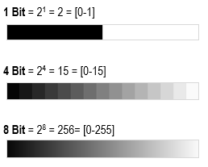

La resolución radiométrica es la capacidad del sensor para detectar las variaciones de radianza espectral que recibe de los cuerpos. Para el caso se imágenes digitales esto se expresa a través del numero de bits.
Por ejemplo, una imagen con una resolución de 8 bits tiene 256 niveles de brillo (Richards & Jia, 2006).

De esta forma, cada píxel que compone una imagen, puede asumir una cantidad de valores específica, dependiendo de su Resolución Radiométrica.
En terminos de interpretación visual, cuando hablamos de resolución radiométrica podremos distinguir detalle en nuestra escala de grises, o profundidad de los colores (en los canales RGB) como se puede observar en la siguiente imagen:

Ilustración: LabGRS